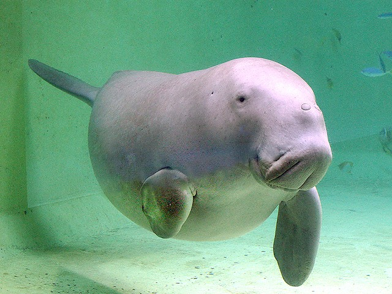

ジュゴン
ジュゴン（儒艮、Dugong dugon）は、ジュゴン目ジュゴン科ジュゴン属に分類される哺乳類。本種のみでジュゴン属を構成し、現生種では本種のみでジュゴン科を構成する。

分布
インド洋、西太平洋、紅海。
モザンビーク北部やマダガスカルから、紅海・ペルシャ湾・インド・インドシナ半島・ボルネオ島・ニューギニア島・ニューカレドニア・バヌアツ近海にかけて分布する。北限は日本（沖縄諸島北緯30度周辺）、南限はオーストラリア（南緯30度周辺）。マダガスカルやモーリシャス、台湾近海では絶滅したとされ、違法密猟や石油流出、藻場の減少などの環境破壊により世界的に個体数が減少し続けていると推定されている。現在、ジュゴンの生息数が最も多い海域は、シャーク湾からモートン湾にかけてのオーストラリア北部の海とされており、2017年時点で約5,500頭が生息している。
形態
全長3メートル。体重450キログラム。体色は灰色で、腹面は淡色。全身は長い柔毛と短い剛毛でまばらに被われる。
鼻面は下方に向かい、円盤状。鼻腔は吻端前方に開口する。眼は小型で、頭部背面付近に位置する。眼後部に耳孔が開口する。15 – 20センチメートルの牙状の切歯が2本あるが、骨の中に埋没している。臼歯の数は6本。胸鰭はしゃもじ形。胸鰭に爪がない。尾鰭は三角形。尾鰭後縁には切れ込みが入る。
出産直後の幼獣は体長1 – 1.2メートル。体重20 – 35キログラム。6本の小臼歯があるが、生後1年以内に脱落し代わりに臼歯が萌出する。 オスの成獣は上顎第2切歯が1 – 2センチメートル萌出する。観察例からこれは交尾の際に滑りやすいメスを扱うのに用いるとする説もある。乳頭は胸鰭基部の腹面に位置する。
前肢は短く顔には届かない。繊維が多く、消化しにくい海草を食べるので、40メートル以上という長い腸を持っている。
生態
熱帯や亜熱帯にある浅海に生息する。季節的な回遊は行わないが、数百キロメートルを移動することもある。シャーク湾やモートン湾では季節移動を行うとする報告例もある。単独もしくは母親と幼獣からなる数頭の群れを形成することが多い。生息数が減少した現在ではまれであるが、数百頭に達する大規模な群れを形成することもある。胸鰭を使って海底を徘徊し、速く泳ぐ際には尾鰭を使う。遊泳速度は時速3キロメートルで、危険を感じた時は時速22キロメートルで逃げることもあるが長続きはしない。野生下の潜水時間は平均1分12秒から1分30秒・平均1分23秒の報告例がそれぞれあり後者では最長6分40秒の報告例もある。空中観察から水深11 – 12メートルまで潜水できると考えられている。一方でオーストラリアのクイーンズランド州では水深33メートルで食跡が発見された例もある。飼育下での潜水時間は最長13分20秒の報告例がある。人間による狩猟などがない地域では聴覚を頼りにダイバーやボートに興味を持って接近することもある。
食性は植物食で、ウミジグサ属Holodule、ウミヒルモ属Holophila、ベニアマモ属Cymodocea、リュウキュウスガモ属Thalassiaなどの海草を食べる。昼間に採食を行うが、人間がいる地域では夜間に採食を行う。1日あたり体重の10 – 16 %の量の食物を摂取していると推定されている。摂取した食物は144 – 168時間（6 – 7日）、体内に留まった後に排泄される。飼育下でアマモ（自然下では熱帯に分布する本種と温帯に自生するアマモは同所的に分布しないため摂取しない）を与えた実験から食物の消化率は80 %以上と推定され、植物食の陸棲哺乳類よりも高い。オーストラリアでは洪水やサイクロンにより海草が広範囲で死滅することがあり（例として1992 – 1993年にハーヴェー湾では洪水とサイクロンにより海草が約1,000平方キロメートルにわたり死滅した）、そのような場合は別の場所へ移動するか繁殖を遅らせる。
繁殖様式は胎生。交尾は鳥羽水族館でオスが斜め後方からメスに接近し、前肢でメスを固定した後に陰茎を挿入した観察例がある。妊娠期間は13か月。1回に1頭の幼獣を産む。出産間隔はオーストラリア周辺では3 – 7年。授乳期間は18か月。幼獣は母親の胸鰭後方について泳ぎながら乳を飲み、母親は前肢で抱きかかえながら授乳はしない。低緯度地方では生後6年、高緯度地方では平均で生後17年で性成熟する。寿命はメスは歯の成長輪から最大73年と推定されている。
人間との関係
有史以前から狩猟の対象とされた。琉球王朝時代の八重山列島の新城島では年貢（人頭税）として本種の干肉（皮ともいう）を納めており、新城島（上地島）にある東御嶽には、捕獲したジュゴンの頭骨が奉納されている。
肉は食用になり、非常に美味とされる。1970年代、オーストラリアのトレス海峡諸島に出稼ぎに出ていた日本人労働者が、現地の食の楽しみについて「ジュゴンとウミガメの味は堪えられない」と語る記録が残されている。
食用や油用、皮革用、牙の狩猟、海洋汚染、漁業やサメ避け用の網による混獲などにより生息数は減少している。オーストラリアではトレス海峡諸島の先住民には狩猟が許可されているが、他地域も含めて密猟されることもある。
日本では生活排水・牧畜廃液・除草剤・農地開発による赤土の流出・海岸開発・モズクの養殖に伴う海洋汚染およびそれによる食物である海草の減少、定置網や底刺し網などの漁業による混獲による絶滅が危惧されている。遺跡や文献・聞き取り調査から以前は南西諸島広域に分布し、主に八重山列島に多く分布していたと推定されている。好適な環境があるにもかかわらず近年の八重山列島での記録がないのは、定置網などによる漁業が盛んなため混獲により地域個体群が絶滅したためと推定されている。文献によると南西諸島では1800年代後半から1900年代初頭にかけて約200頭が捕獲された。1894年から1916年までの23年間に300頭以上が伝統的漁法で捕獲されたとの推計もある。沖縄県では、戦後の食糧難の時期に行われたダイナマイト漁によって生息数が激減したとの通説があるが、この推計はそれ以前の伝統漁法による捕獲も大きく影響したことを示している。
2017年に作成された沖縄県のレッドデータ（改訂第3版）では絶滅危惧IA類とされている。日本では1972年に国の天然記念物に指定され、2003年からは鳥獣保護法でも捕獲や殺傷が原則禁止されている。
飼育
神経質で飼育は非常に難しいとされており、世界の2か所の施設で2頭だけが飼育されている。1頭は鳥羽水族館、もう1頭はオーストラリアのシドニー水族館にいる。
鳥羽水族館ではかつて2頭が飼育されていたが、オスの「じゅんいち」が2011年2月10日午前8時25分に死亡した。じゅんいちは鳥羽水族館で約31年間にわたって飼育され、世界最長飼育記録を更新していたが、それも11,475日目で途絶えた。これにより日本国内での飼育は同水族館のメス「セレナ」1頭だけとなった。2018年9月15日、「セレナ」の飼育期間が11,476日を達成し「じゅんいち」の持っていた世界最長飼育記録を更新した。
伝承とイメージ
伝説上の人魚は西洋と東洋とで大きく姿形が異なるが、いずれの人魚もジュゴンがモデルであるとの通説がある。
上半身が人間の女性で下半身が魚や海獣の人魚が本種と結びつけられた理由としては、本種は胸鰭の基部に1個ずつ乳頭があり、これが隆起し乳房のように見えるためとする説もある。また、ひれ状の前肢で子を抱いて、立った形で海上に浮くからだともいう。しかし、ジュゴンの姿は人間の女性とはかけ離れているので、初めに上半身が人間・下半身が魚や海獣といった人魚のイメージができあがり、後になって本種と結びつけられたと推定されている。
西洋における人魚のモチーフとなったとする説もあるが、伝承が伝わるアイルランドやデンマークなどは、ジュゴンの生息域から大きく外れている。
ジュゴンの肉には不老不死の効能や媚薬としての効果があると信じられてきた。日本の八百比丘尼伝説で、比丘尼が口にして800年の命を得た人魚の肉は、ジュゴンの肉であるとされる。
また、骨で作った装飾品も刃物や鉄砲に対するお守りになると信じられていた。涙も相手に付けることで恋愛成就の効能があると信じられていた。聖櫃を包んでいたのは本種の皮だったと考えられている。
日本の琉球地方ではニライカナイの神の現世への乗り物とされたり、助けたジュゴンに津波の襲来を教えられ恩返しされるといった伝承やジュゴン漁に関する民謡などがある。